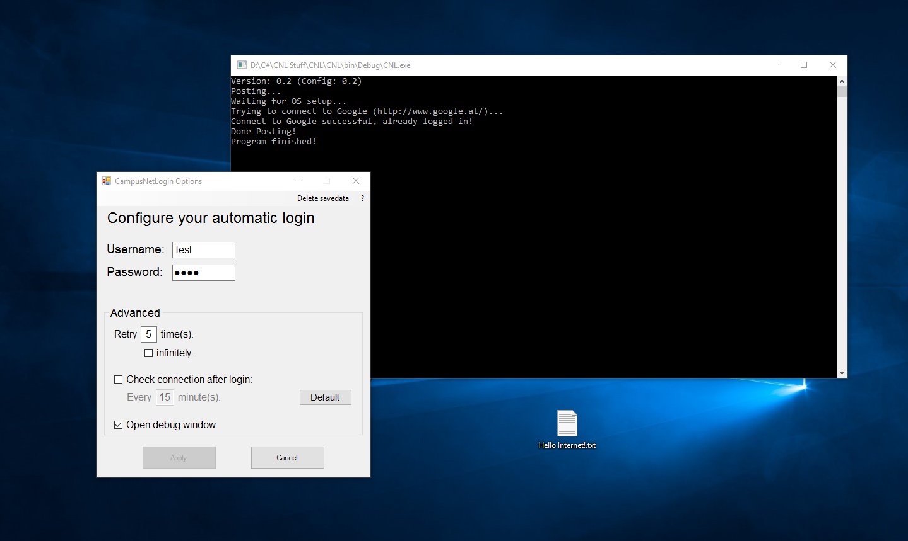

CNL - CampusNetLogin (V 1.2)
Dieses kleine Programm kann dich automatisch in das Campus Internet in Puch Urstein einloggen.
">Installation in 3 Schritten:


- Lade die Software gratis herunter und entpacke die Datei.
- Führe die Datei "CNLOptions.exe" aus und konfiguriere deinen Login.
Du musst wahrscheinlich dem Programm die Ausführung erlauben. - Lege "CNL.exe" (oder eine Verknüpfung dazu) in deinen Autostart-Ordner, oder führe das Programm manuell aus wann immer du einen Login benötigst.
Ich empfehle eine Verknüpfung in den Autostart-Ordner und eine weitere Verknüpfung auf den Desktop zu legen, um CNL manuell zu starten falls du einen Login benötigst.
Brauchst du Hilfe?
Installationsinfos zu OSX findest du hier.
Funktionsweise
Nachdem du deine Login-Daten in "CNL-Options" konfiguriert hast, überprüft CNL sobald du es ausführst zuerst deine Verbindung und sendet dann wenn nötig
deine Login-Daten für dich an den Campus Router.
CNL speichert alle notwendigen Daten aus "CNLOptions" verschlüsselt auf deiner eigenen Festplatte. CNL entschlüsselt diese Daten dann sobald du es
ausführst. Solltest du, aus welchem Grund auch immer, besagte Daten von deinem Rechner löschen wollen, kannst du
einfach den Knopf "Delete savedata" im oberen rechten Eck von "CNLOptions" drücken.
Empfohlene Einstellungen ("Advanced Settings")
Die standard Einstellungen sind bereits die empfohlenen Einstellungen. Die folgenden Zeilen werden dir jedoch noch einmal den Nutzen der einzelnen Optionen, sowie deren Vor- und Nachteile näher bringen.
"Retry":
Diese Option legt fest wie oft das Programm versuchen wird dich einzuloggen, sollte es beim ersten Mal nicht klappen.
Ich empfehle diese Einstellung auf "5" oder "infinitely" zu stellen. Jedoch sollte man im Hinterkopf behalten, dass im
Falle einer nicht vorhandenen Internet Verbindung die Einstellung "infinitely" das Programm im Hintergrund unendlich laufen lassen wird.
"Check connection":
Diese Option legt fest, ob und in welchen Zeitabständen die Verbindung getestet werden soll nachdem man eingeloggt wurde.
Ich empfehle diese Einstellung komplett auszuschalten und statt dessem das Programm manuell zu starten, sollte man ausgeloggt werden. Der Grund ist etwas
komplizierter zu erklären aber lasst es mich versuchen...
Da das überprüfen der Verbindung im Sekundentakt deine Bandbreite belasten würde musste ich die Überprüfungsrate auf Minuten beschränken. Deshalb hat die Einstellung
"1" zu Folge, dass deine Verbindung jede Minute geprüft wird, was bedeutet im "Worst Case" loggt dich das Programm wieder ein nachdem du 1 Minute ausgeloggt warst.
Jedoch ist es nicht sehr Wahrscheinlich ausgeloggt zu werden, wenn deine Verbindung jede Minute aktiv ist. Solltest du also wirklich diese Funktion verwenden wollen, würde ich
versuchen ein goldenes Mittel zwischen Überprüfungsabstand und "Worst Case" Zeit zu finden... Das ist der Grund warum der standard Wert bei "15" liegt: Worst Case...
15 Minuten. Durchschnittlicher Fall... 7.5 Minuten.
"Open Debug Window":
Wenn du diese Option einschaltest öffnet sich mit CNL ein Kommando-Fenster.
Dieses Fenster dient nur zur Fehlererkennung/-behebung, deshalb ist es standardmäßig auch ausgeschaltet. Schließt man dieses Fenster dann wird auch das Programm beendet.
Hast du also zum Beispiel die Option "Check connection" eingeschaltet musst du das Fenster zumindest minimiert lassen, damit diese Funktion nich abgebrochen wird. Solltest du jedoch genau
wissen wollen was gerade passiert, wenn das Programm läuft kannst du diese Option gerne einschalten.
Feedback
Bitte sagt mir was ihr denkt! Einen Fehler gefunden? Kontaktiert mich unter sarzt.mmt-b2015@fh-salzburg.ac.at
Entwicklungszeit:
Ende 2015 - Anfang 2016